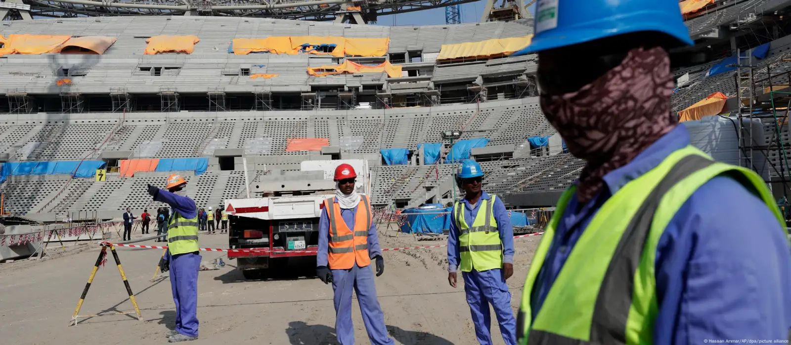

En los últimos años, la FIFA ha enfrentado polémicas relacionadas con corrupción, procesos de selección de sedes cuestionables y condiciones laborales en la construcción de estadios, especialmente en Catar 2022. Sin embargo, también ha tomado medidas para modernizar y globalizar el torneo, como la introducción del VAR (árbitro asistente por video) y la expansión del número de participantes.
